|
 |
| САКСЕНДА® (SAXENDA®) liraglutide раствор д/п/к введения | |||||||||||||||||||||||||||||||||||||||||||||||||||||||||||||||||||||||||||||||||||||||||||||||||||||||||||||||||||||
|
Клинико-фармакологическая группа: Гипогликемический препарат. Агонист рецепторов глюкагоноподобного пептида Номер и дата регистрации: ЛП-003491 от 09.03.16 Код ATX: A10BJ02 |
Владелец регистрационного удостоверения: зарегистрировано и произведено Представительство: | ||||||||||||||||||||||||||||||||||||||||||||||||||||||||||||||||||||||||||||||||||||||||||||||||||||||||||||||||||||
Форма выпуска, состав и упаковка Раствор для п/к введения прозрачный, бесцветный или почти бесцветный.
Вспомогательные вещества: натрия гидрофосфата дигидрат, пропиленгликоль, фенол, натрия гидроксид/кислота хлористоводородная (для коррекции pH), вода для инъекций. 3 мл - картриджи стеклянные (1) - шприц-ручки пластиковые мультидозовые одноразовые для многократных инъекций (3) - пачки картонные. | |||||||||||||||||||||||||||||||||||||||||||||||||||||||||||||||||||||||||||||||||||||||||||||||||||||||||||||||||||||
| |||||||||||||||||||||||||||||||||||||||||||||||||||||||||||||||||||||||||||||||||||||||||||||||||||||||||||||||||||||
Описание препарата основано на официально утвержденной инструкции по применению и утверждено компанией-производителем для издания 2023 г. | |||||||||||||||||||||||||||||||||||||||||||||||||||||||||||||||||||||||||||||||||||||||||||||||||||||||||||||||||||||
Фармакологическое действие |
Фармакокинетика |
Показания |
Режим дозирования |
Побочное действие |
Противопоказания |
Беременность и лактация |
Особые указания |
Передозировка |
Лекарственное взаимодействие |
Условия хранения и сроки годности |
Условия реализации
Фармакологическое действие
Фармакодинамика Действующее вещество препарата Саксенда® - лираглутид - представляет собой ацилированный аналог человеческого ГПП-1, произведенный методом биотехнологии рекомбинантной ДНК с использованием штамма Saccharomyces cerevisiae, имеющий 97% гомологичности аминокислотной последовательности эндогенному человеческому ГПП-1. Лираглутид связывается и активирует рецептор ГПП-1 (ГПП-1Р). Лираглутид устойчив к метаболическому распаду, его период полувыведения из плазмы после подкожного введения составляет 13 ч. Фармакокинетический профиль лираглутида, позволяющий вводить его пациентам 1 раз/сут, является результатом самоассоциации, в результате которой происходит замедленное всасывание препарата; связывания с белками плазмы; а также устойчивости к дипептидилпептидазе-4 (ДПП-4) и нейтральной эндопептидазе (НЭП). ГПП-1 является физиологическим регулятором аппетита и потребления пищи, а ГПП-1Р расположены в нескольких областях головного мозга, участвующих в процессах регуляции аппетита. В исследованиях на животных периферическое введение лираглутида приводило к захвату препарата в специфических областях головного мозга, включая гипоталамус, где лираглутид посредством специфической активации ГПП-1Р усиливал сигналы насыщения и ослаблял сигналы голода, тем самым приводя к уменьшению массы тела. ГПП-1Р представлены также в специфических областях сердца, сосудов, иммунной системы и почек. В экспериментах на мышах с атеросклерозом лираглутид предупреждал дальнейшее развитие аортальных бляшек и снижал в них воспаление. В дополнение, лираглутид оказывал благоприятный эффект на липиды в плазме. Лираглутид не уменьшал размер уже существующих бляшек. Лираглутид уменьшает массу тела у человека преимущественно посредством уменьшения массы жировой ткани. Уменьшение массы тела происходит за счет уменьшения потребления пищи. Лираглутид не увеличивает 24-часовой расход энергии. Лираглутид регулирует аппетит при помощи усиления чувства наполнения желудка и насыщения, одновременно ослабляя чувство голода и уменьшая предполагаемое потребление пищи. Лираглутид стимулирует секрецию инсулина и уменьшает неоправданно высокую секрецию глюкагона глюкозозависимым образом, а также улучшает функцию β-клеток поджелудочной железы, что приводит к снижению концентрации глюкозы натощак и после приема пищи. Механизм снижения концентрации глюкозы также включает небольшую задержку опорожнения желудка. В долгосрочных клинических исследованиях с участием пациентов с избыточной массой тела и ожирением применение препарата Саксенда® в сочетании с низкокалорийной диетой и усиленной физической активностью приводило к значительному снижению массы тела. Влияние на аппетит, потребление калорий и расход энергии, опорожнение желудка и концентрацию глюкозы натощак и после приема пищи Фармакодинамические эффекты лираглутида изучались в пятинедельном фармакологическом клиническом исследовании с участием 49 пациентов с ожирением (ИМТ 30-40 кг/м2) без сахарного диабета (СД). Аппетит, потребление калорий и расход энергии Считается, что снижение массы тела при применении препарата Саксенда® связано с регулированием аппетита и количества потребляемой пищи. Аппетит оценивали перед и в течение 5 ч после стандартизированного завтрака; неограниченное потребление пищи оценивали во время последующего обеда. По сравнению с плацебо препарат Саксенда® увеличивал чувство насыщения и наполнения желудка после приема пищи и уменьшал чувство голода и оценочное количество предполагаемого потребления пищи, а также уменьшал неограниченное потребление пищи. При оценке с помощью респираторной камеры не было отмечено связанного с терапией увеличения 24-часового расхода энергии. Опорожнение желудка Применение препарата Саксенда® приводило к небольшой задержке опорожнения желудка в течение первого часа после приема пищи, в результате чего уменьшалась скорость повышения концентрации глюкозы, а также общая концентрация глюкозы крови после приема пищи. Концентрации глюкозы, инсулина и глюкагона натощак и после приема пищи Концентрации глюкозы, инсулина и глюкагона натощак и после приема пищи оценивали перед и в течение 5 ч после стандартизированного приема пищи. По сравнению с плацебо препарат Саксенда® уменьшал концентрацию глюкозы натощак и после приема пищи (AUC0-60 мин) в течение первого часа после приема пищи, а также уменьшал 5-часовую AUC глюкозы и нарастающую концентрацию глюкозы (AUC0-300 мин). Кроме того, по сравнению с плацебо препарат Саксенда® уменьшал постпрандиальные концентрации глюкагона (AUC0-300 мин) и инсулина (AUC0-60 мин) и нарастающую концентрацию инсулина (iAUC0-60 мин) после приема пищи. Концентрации глюкозы и инсулина натощак и нарастающие концентрации глюкозы и инсулина также оценивали во время перорального теста толерантности к глюкозе (ПТТГ) с 75 г глюкозы до начала терапии и через 1 год терапии у 3731 пациента с избыточной массой тела и с ожирением, а также с наличием или отсутствием предиабета. По сравнению с плацебо препарат Саксенда® уменьшал концентрацию натощак и нарастающую концентрацию глюкозы. Эффект был более выраженным у пациентов с предиабетом. Кроме того, по сравнению с плацебо препарат Саксенда® уменьшал концентрацию инсулина натощак и увеличивал нарастающую концентрацию инсулина. После 160 недель продолжающейся терапии лираглутидом 3.0 мг AUC глюкозы плазмы уменьшилась, в то время как при применении плацебо оставалась неизменной. Дополнительно AUC инсулина оставалась относительно стабильной в течение 160-недельного периода лечения лираглутидом 3.0 мг, в то время как при применении плацебо наблюдалось ее снижение. Все изученные эффекты от проводимой терапии были статистически значимыми в пользу лираглутида 3.0 мг. Влияние на концентрацию глюкозы натощак и нарастающую концентрацию глюкозы у пациентов с сахарным диабетом 2 (СД2) типа с избыточной массой тела и ожирением По сравнению с плацебо препарат Саксенда® снижал концентрацию глюкозы натощак и среднюю нарастающую постпрандиальную концентрацию глюкозы (через 90 мин после приема пищи, среднее значение для 3 приемов пищи в сутки). Функция β-клеток поджелудочной железы Клинические исследования продолжительностью до одного года с применением препарата Саксенда® у пациентов с избыточной массой тела, а также с наличием или отсутствием СД продемонстрировали улучшение и сохранение функции β-клеток поджелудочной железы. Это было показано с использованием таких методов измерения, как гомеостатическая модель оценки функции β-клеток (НОМА-В) и соотношение концентраций проинсулина и инсулина. Клиническая эффективность и безопасность Эффективность и безопасность применения препарата Саксенда® для длительной коррекции массы тела в сочетании с низкокалорийной диетой и усилением физической активности была изучена в 4 рандомизированных двойных слепых плацебо-контролируемых исследованиях 3 фазы SCALE, включавших в общей сложности 5358 пациентов. Масса тела По сравнению с плацебо при применении препарата Саксенда® было достигнуто более выраженное снижение массы тела у пациентов с ожирением/избыточной массой тела во всех исследованных группах, в т.ч. с наличием или отсутствием предиабета, СД2 и обструктивным апноэ во сне средней или тяжелой степени. Кроме того, среди популяции исследования большая часть пациентов достигла снижения массы тела ≥5% и >10% при применении препарата Саксенда® по сравнению с плацебо. Значительное снижение массы тела наблюдалось также в клиническом исследовании, в котором пациенты достигли среднего показателя снижения массы тела 6% с помощью низкокалорийной диеты в течение 12 недель до начала лечения препаратом Саксенда®. В этом исследовании большее количество пациентов сохранили потерю массы тела, которая была достигнута до начала лечения препаратом Саксенда® по сравнению с плацебо (81.4% и 48.9% соответственно). 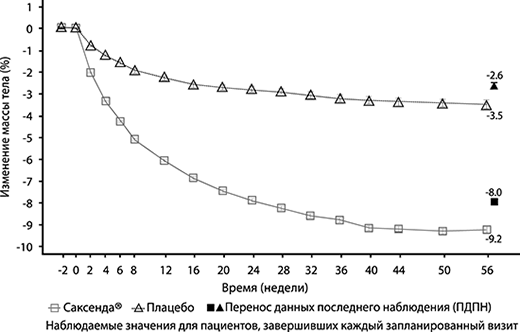 Рис. 1. Изменение массы тела (%) в динамике по сравнению с исходным значением у пациентов в исследовании №1 (0-56 недели). В клиническом исследовании длительностью 160 недель пациенты, получавшие препарат Саксенда®, достигли более значительной потери массы тела по сравнению с пациентами, получавшими плацебо. В основном потеря массы тела произошла в первый год и удерживалась на протяжении 160 недель. В клиническом исследовании длительностью 160 недель средний процент изменения массы тела и доля пациентов, достигших потери массы тела от исходного значения до 160 недели не менее чем на 5% и более 10%, были также значительными по сравнению с плацебо. Снижение массы тела после 12 недель терапии препаратом Саксенда®(лираглутид 3.0 мг) В двух исследованиях продолжительностью 56 недель после 12 недель терапии препаратом Саксенда® в дозе 3.0 мг 67.5% и 50.4% пациентов достигли снижения массы тела не менее чем на 5%. Среднее снижение массы тела у этих пациентов, завершивших исследование, составило 11.2% по сравнению с исходным значением. У пациентов, достигших снижения массы тела менее чем на 5% после 12 недель терапии в дозе 3.0 мг и завершивших исследование (1 год), среднее снижение массы тела составило 3.8%. Контроль гликемии Терапия лираглутидом существенно улучшала гликемические показатели в субпопуляциях с нормогликемией, предиабетом и СД2. СД2 развился у 0.2% пациентов, получавших препарат Саксенда®, по сравнению с 1.1% в группе плацебо. У 69.2% пациентов с предиабетом наблюдалось обратное развитие этого состояния при применении препарата Саксенда® по сравнению с 32.7% в группе плацебо. На 160-й неделе при продолжении лечения диагноз СД2 был поставлен 3% пациентов, получавшим препарат Саксенда®, и 11% пациентов, получавшим плацебо. По сравнению с плацебо время до развития СД2 при применении лираглутида 3.0 мг было в 2.7 раза больше, а относительный риск (ОР) развития СД2 при применении лираглутида равен 0.2. На 160-й неделе в группе лираглутида 3.0 мг у 65.9% пациентов с предиабетом наблюдалось обратное развитие этого состояния до нормогликемии по сравнению с 36.3% в группе плацебо. В одном из исследований 69.2% и 56.5% пациентов с ожирением и СД2, получавших препарат Саксенда®, достигли целевого значения HbA1c<7% и ≤6.5% соответственно, по сравнению с 27.2% и 15% у пациентов, получавших плацебо. Кардиометаболические параметры По сравнению с плацебо препарат Саксенда® значительно улучшал показатели систолического АД, окружности талии и концентрации липидов натощак. В клиническом исследовании длительностью 160 недель среднее уменьшение окружности талии составило 8.2 см при применении препарата Саксенда® и 4 см при применении плацебо; уменьшение показателей систолического и диастолического АД составило 4.3 мм рт.ст. и 1.5 мм рт.ст. при применении препарата Саксенда® и 2.7 мм рт.ст. и 1.8 мм рт.ст. при применении плацебо соответственно; уменьшение концентрации холестерина ЛПНП составило 3.1 ммоль/л при применении препарата Саксенда® и 0.7 ммоль/л при применении плацебо; увеличение концентрации холестерина ЛПВП составило 2.3 ммоль/л при применении препарата Саксенда® и 0.5 ммоль/л при применении плацебо. Индекс апноэ-гипноэ (ИАГ) По сравнению с плацебо при применении препарата Саксенда® наблюдалось существенное снижение тяжести обструктивного апноэ во сне, которая оценивалась по изменению ИАГ относительно исходного значения. Иммуногенность Вследствие потенциальных иммуногенных свойств белковых и пептидных лекарственных препаратов, у пациентов могут появиться антитела к лираглутиду после терапии препаратом Саксенда®. В клиническом исследовании у 2.5% пациентов, получавших препарат Саксенда®, появились антитела к лираглутиду. Образование антител не привело к снижению эффективности препарата Саксенда®. Оценка сердечно-сосудистых событий Большие сердечно-сосудистые события (БССС) были оценены группой внешних независимых экспертов и определены как инфаркт миокарда без смертельного исхода, инсульт без смертельного исхода и смерть по причине сердечно-сосудистой патологии. В 5 двойных слепых контролируемых клинических исследованиях 2 и 3 фазы с применением препарата Саксенда® было отмечено 6 БССС у пациентов, получавших препарат Саксенда®, и 10 БССС - у получавших плацебо пациентов. ОР с 95% ДИ составил 0.33 при применении препарата Саксенда® по сравнению с плацебо. В клиническом исследовании 3 фазы среднее увеличение ЧСС составило 2.5 уд./мин у пациентов, получавших препарат Саксенда®. Наибольшее увеличение ЧСС наблюдалось после 6 недель терапии. Это увеличение было обратимым и исчезало после прекращения терапии лираглутидом. Было проведено многоцентровое, плацебо-контролируемое, двойное слепое клиническое исследование "Эффект и воздействие лираглутида при сахарном диабете: оценка сердечно-сосудистых рисков" (LEADER®). По сравнению с плацебо лираглутид 1.8 мг существенно снижал риск развития БССС (рисунок 2). ОР развития БССС был стабильно ниже 1 для всех трех сердечно-сосудистых событий. 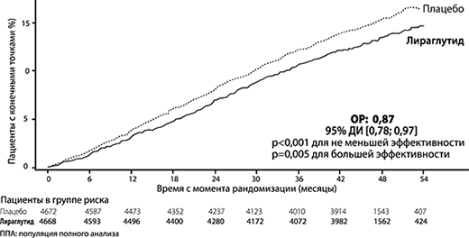 Рис. 2. График Каплан-Мейера - время до возникновения первого БССС - Популяция полного анализа (ППА). Лираглутид 1.8 мг также существенно снижал риск развития расширенных БССС (первичные БССС, нестабильная стенокардия, приводящая к госпитализации, реваскуляризация миокарда или госпитализация по причине сердечной недостаточности) и прочих вторичных конечных точек. Дети и подростки В двойном слепом клиническом исследовании, сравнивающем эффективность и безопасность препарата Саксенда® относительно плацебо в отношении снижения массы тела у подростков в возрасте 12 лет и старше с ожирением, препарат Саксенда® превосходил плацебо в снижении стандартного отклонения ИМТ (измеренного для оценки снижения массы тела) после 56 недель лечения. Большее количество пациентов достигло ≥5% и ≥10% снижения ИМТ на терапии лираглутидом, чем пациенты, получавшие плацебо, при более значительном снижении среднего ИМТ и массы тела. В течение 26 недель последующего наблюдения без применения препарата наблюдалось восстановление массы тела при применении препарата Саксенда® по сравнению с плацебо (оценивалось как изменение стандартного отклонения ИМТ). Исходя из переносимости, для большинства пациентов (82.4%) доза препарата была увеличена, и они продолжили получать дозу 3.0 мг, для остальных пациентов доза была увеличена, и они продолжили получать препарат в диапазоне доз от 2.4 мг до 0.6 мг. Результаты определяемых пациентами показателей Препарат Саксенда® по сравнению с плацебо улучшал определяемые пациентами оценки по нескольким показателям. Было отмечено значительное улучшение общей оценки по Упрощенному опроснику влияния массы тела на качество жизни (IWQoL-Lite) и по всем шкалам опросника для оценки качества жизни SF-36, что указывает на положительное влияние на физический и психологический компоненты качества жизни. Фармакокинетика
Всасывание Всасывание лираглутида после п/к введения происходит медленно, время достижения Cmax - около 11 ч после введения. У пациентов с ожирением (ИМТ 30-40 кг/м2) после введения лираглутида в дозе 3.0 мг средняя равновесная концентрация лираглутида (AUCt/24) достигает приблизительно 31 нмоль/л. В диапазоне доз от 0.6 мг до 3.0 мг экспозиция лираглутида увеличивается пропорционально дозе. Абсолютная биодоступность лираглутида после п/к введения составляет приблизительно 55%. Распределение Средний кажущийся Vd после п/к введения лираглутида в дозе 3.0 мг составляет 20-25 л (у лиц с массой тела около 100 кг). Лираглутид в значительной степени связывается с белками плазмы крови (>98%). Метаболизм На протяжении 24 ч после введения здоровым добровольцам однократной дозы [3Н]-лираглутида главным компонентом в плазме оставался неизмененный лираглутид. Были обнаружены 2 метаболита (≤9% и ≤5% от уровня общей радиоактивности в плазме крови). Выведение Лираглутид метаболизируется эндогенно подобно крупным белкам без участия какого-либо специфического органа в качестве основного пути выведения. После введения дозы [3Н]-лираглутида неизмененный лираглутид не определялся в моче или кале. Лишь незначительная часть введенной радиоактивности в виде метаболитов лираглутида выводилась почками или через кишечник (6% и 5% соответственно). Радиоактивные вещества выделяются почками или через кишечник, в основном, в течение первых 6-8 дней и представляют собой 3 метаболита. Средний клиренс после п/к введения 3.0 мг лираглутида составляет приблизительно 0.9-1.4 л/ч, T1/2 составляет примерно 13 ч. Фармакокинетика у особых групп пациентов Пациенты пожилого возраста. Коррекция дозы с учетом возраста не требуется. Согласно результатам популяционного фармакокинетического анализа у пациентов с избыточной массой тела и ожирением в возрасте 18-82 лет возраст не оказывал клинически значимого влияния на фармакокинетику лираглутида при п/к введении в дозе 3.0 мг. Пол. Основываясь на данных популяционного фармакокинетического анализа, у женщин скорректированный по массе тела клиренс лираглутида после п/к введения в дозе 3.0 мг на 24% меньше, чем у мужчин. На основании данных по ответной реакции на воздействие препарата, коррекции дозы с учетом пола не требуется. Этническая принадлежность. Согласно результатам популяционного фармакокинетического анализа, в который были включены данные исследований у пациентов с избыточной массой тела и ожирением европеоидной, негроидной, азиатской и латиноамериканской расовых групп, этническая принадлежность не оказывала клинически значимого влияния на фармакокинетику лираглутида при п/к введении в дозе 3.0 мг. Масса тела. Экспозиция лираглутида уменьшается при увеличении исходной массы тела. Применение лираглутида в дозе 3.0 мг ежедневно обеспечивает адекватную экспозицию в диапазоне массы тела 60-234 кг, согласно оценке ответной реакции на системную экспозицию препарата в клинических исследованиях. Экспозицию лираглутида у пациентов с массой тела больше 234 кг не изучали. Пациенты с печеночной недостаточностью. Фармакокинетику лираглутида оценивали у пациентов с различной степенью нарушения функции печени в исследовании однократной дозы (0.75 мг). Наблюдалось снижение экспозиции лираглутида на 13-23% у пациентов с печеночной недостаточностью легкой и средней степени тяжести и значительное снижение экспозиции лираглутида (на 44%) у пациентов с печеночной недостаточностью тяжелой степени (>9 баллов по классификации Чайлд-Пью) в сравнении со здоровыми добровольцами. Пациенты с почечной недостаточностью. В исследовании однократной дозы (0.75 мг) экспозиция лираглутида была меньше у пациентов с почечной недостаточностью по сравнению с лицами с нормальной функцией почек. Экспозиция лираглутида была меньше на 33%, 14%, 27% и 26%, соответственно, у пациентов с почечной недостаточностью легкой (КК 50-80 мл/мин), средней (КК 30-50 мл/мин), тяжелой степени (КК <30 мл/мин) и у пациентов с терминальной стадией почечной недостаточности, нуждающихся в гемодиализе. Дети и подростки. Фармакокинетические свойства лираглутида 3.0 мг оценивались в клинических исследованиях у подростков с ожирением в возрасте от 12 лет до 18 лет (134 пациента, масса тела 62-178 кг). Экспозиция лираглутида у подростков в возрасте от 12 до 18 лет была сопоставима с наблюдаемой у взрослых пациентов с ожирением. Фармакокинетические свойства были также оценены в клиническом фармакологическом исследовании с участием детей с ожирением в возрасте от 7 лет до 11 лет (13 пациентов, масса тела 54-87 кг). Экспозиция лираглутида 3.0 мг у детей в возрасте от 7 лет до 11 лет была сопоставима с наблюдаемой у взрослых пациентов после поправки на массу тела. Показания
Взрослые Препарат Саксенда® показан в качестве дополнения к низкокалорийной диете и усиленной физической нагрузке для длительного применения с целью коррекции массы тела у взрослых пациентов с ИМТ:
Подростки Препарат Саксенда® может быть использован в качестве дополнения к здоровому питанию и усиленной физической нагрузке с целью коррекции массы тела у подростков в возрасте от 12 лет и старше с:
*Пороговое значение ИМТ IOTF для ожирения в зависимости от пола в возрасте от 12 до 18 лет. Таблица 1. Пороговое значение ИМТ IOTF для ожирения в зависимости от пола в возрасте от 12 до 18 лет
Режим дозирования
Препарат Саксенда® предназначен только для п/к введения. Его нельзя вводить в/в или в/м. Препарат Саксенда® вводят 1 раз/сут в любое время, независимо от приема пищи. Его следует вводить в область живота, бедра или плеча. Место и время инъекции могут быть изменены без коррекции дозы. Тем не менее, желательно делать инъекции примерно в одно и то же время суток после выбора наиболее удобного времени. Дозы Начальная доза составляет 0.6 мг/сут. Дозу увеличивают до 3.0 мг/сут, прибавляя по 0.6 мг с интервалами не менее одной недели для улучшения желудочно-кишечной переносимости (см. таблицу 2). Если при увеличении дозы новая доза плохо переносится пациентом в течение 2 недель подряд, следует рассмотреть вопрос о прекращении терапии. Применение препарата в суточной дозе больше 3.0 мг не рекомендуется. Таблица 2. Схема увеличения дозы
Взрослые. Терапию препаратом Саксенда® следует прекратить, если после 12 недель применения препарата в дозе 3.0 мг/сут потеря массы тела составила менее 5% от исходного значения. Подростки. Терапию препаратом Саксенда® следует прекратить и пересмотреть, если после 12 недель применения препарата в дозе 3.0 мг/сут или максимальной переносимой дозе пациенты потеряли менее 4% от своего ИМТ или z-показателя ИМТ. Пациенты с сахарным диабетом 2 типа Препарат Саксенда® не следует применять в комбинации с другими агонистами рецепторов ГПП-1. В начале терапии препаратом Саксенда® рекомендуется уменьшить дозу одновременно применяемого препарата инсулина или секретагогов инсулина (таких как препараты сульфонилмочевины) для уменьшения риска развития гипогликемии. Самоконтроль концентрации глюкозы крови может быть необходим для корректировки дозы инсулина или секретагогов инсулина. Особые группы пациентов Коррекция дозы у пациентов пожилого возраста (≥65 лет) не требуется. Опыт применения препарата у пациентов в возрасте ≥75 лет ограничен, применение препарата у этих пациентов не рекомендуется. У пациентов с почечной недостаточностью легкой или средней степени (КК ≥30 мл/мин) коррекция дозы не требуется. Имеется ограниченный опыт применения препарата Саксенда® у пациентов с почечной недостаточностью тяжелой степени (КК <30 мл/мин). Применение препарата Саксенда® у таких пациентов, включая пациентов с терминальной стадией почечной недостаточности, противопоказано (см. разделы "Фармакокинетика" и "Противопоказания"). У пациентов с печеночной недостаточностью легкой и средней степени тяжести коррекция дозы не требуется. Применение препарата Саксенда® у пациентов с печеночной недостаточностью тяжелой степени противопоказано. У пациентов с печеночной недостаточностью легкой или средней степени тяжести препарат следует применять с осторожностью (см. раздел "Фармакокинетика" и "Противопоказания"). Применение препарата Саксенда® у детей и подростков в возрасте до 12 лет или у подростков с массой тела ≤60 кг противопоказано в связи с отсутствием данных (см. раздел "Фармакологическое действие", Клиническая эффективность и безопасность). Для подростков в возрасте от 12 до 18 лет следует применять такой же режим увеличения дозы, как и для взрослых (см. таблицу 2). Дозу препарата следует увеличивать до тех пор, пока не будет достигнуто значение 3.0 мг (терапевтическая доза) или максимально переносимая доза. Применение препарата в суточной дозе больше 3.0 мг не рекомендуется. Пропущенная доза Если после обычного времени введения дозы прошло менее 12 ч, пациент должен ввести дозу как можно быстрее. Если до обычного времени введения следующей дозы осталось менее 12 ч, пациент не должен вводить пропущенную дозу, а должен возобновить введение препарата со следующей запланированной дозы. Не следует вводить дополнительную или повышенную дозу для компенсации пропущенной дозы. Руководство по применению Препарат Саксенда® нельзя применять, если он выглядит иначе, чем прозрачная и бесцветная или почти бесцветная жидкость. Препарат Саксенда® нельзя применять, если он был заморожен. Препарат Саксенда® можно вводить при помощи игл длиной до 8 мм. Шприц-ручка разработана для использования с одноразовыми иглами НовоФайн® или НовоТвист®. Инъекционные иглы не включены в упаковку. Пациент должен быть проинформирован о том, что использованную иглу следует выбрасывать после каждой инъекции в соответствии с местными требованиями, а также о том, что шприц-ручку Саксенда® необходимо хранить с отсоединенной иглой. Такая мера позволит предотвратить закупорку игл, загрязнение, инфицирование и вытекание препарата из шприц-ручки и гарантирует точность дозирования. Инструкция для пациентов по применению препарата Саксенда® раствор для п/к введения 6 мг/мл в предварительно заполненной шприц-ручке Внимательно прочитайте данную инструкцию перед использованием предварительно заполненной шприц-ручки с препаратом Саксенда®. Используйте шприц-ручку только после того, как Вы научитесь ею пользоваться под руководством врача или медсестры. Начните с проверки маркировки на этикетке шприц-ручки, чтобы убедиться, что она содержит препарат Саксенда® 6 мг/мл, а затем внимательно изучите представленные ниже иллюстрации, на которых показаны различные детали шприц-ручки и иглы. Если Вы слабовидящий или у Вас имеются серьезные проблемы со зрением, и Вы не можете различить цифры на счетчике дозы, не используйте шприц-ручку без посторонней помощи. Помочь Вам может человек с хорошим зрением, обученный использованию предварительно заполненной шприц-ручки с препаратом Саксенда®. Предварительно заполненная шприц-ручка содержит 18 мг лираглутида и позволяет выбрать дозы 0.6 мг, 1.2 мг, 1.8 мг, 2.4 мг и 3.0 мг. Шприц-ручка разработана для использования с одноразовыми иглами НовоФайн® или НовоТвист® длиной до 8 мм. Иглы не входят в упаковку. Важная информация: обратите особое внимание на информацию со знаком (!) - это очень важно для безопасного использования шприц-ручки. Предварительно заполненная шприц-ручка с препаратом Саксенда® и игла (пример) 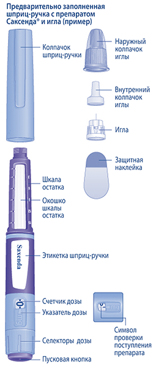 1. Подготовка шприц-ручки с иглой к использованию
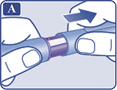
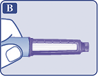
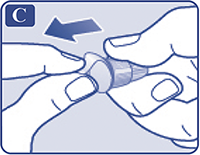
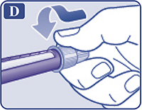
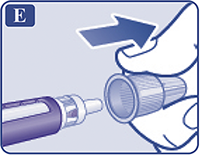
(!) Всегда используйте новую иглу для каждой инъекции. Это может предотвратить закупорку игл, загрязнение, инфицирование и введение неправильной дозы препарата. (!) Никогда не используйте иглу, если она погнута или повреждена. 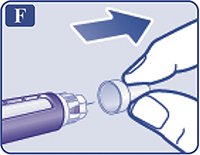 2. Проверка поступления препарата
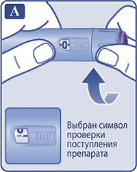
На конце иглы должна появиться капля раствора. На конце иглы может оставаться маленькая капля, но она не будет введена при инъекции. Если капля раствора на конце иглы не появилась, необходимо повторить операцию 2 "Проверка поступления препарата", но не более 6 раз. Если капля раствора так и не появилась, следует поменять иглу и повторить операцию 2 "Проверка поступления препарата" еще раз. Если капля раствора так и не появилась, утилизируйте шприц-ручку и используйте новую. (!) Всегда перед использованием новой шприц-ручки в первый раз убедитесь в том, что на конце иглы появилась капля раствора. Это гарантирует поступление препарата. Если капля раствора не появилась, препарат не будет введен, даже если счетчик дозы будет двигаться. Это может указывать на то, что игла закупорена или повреждена. Если Вы не проверите поступление препарата перед первой инъекцией с помощью новой шприц-ручки, Вы можете не ввести необходимую дозу и ожидаемый эффект препарата Саксенда® не будет достигнут. 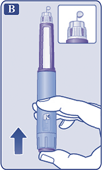 3. Установка дозы
Если доза была выбрана неправильно, Вы можете поворачивать селектор дозы вперед или назад, пока не будет установлена правильная доза. Максимальная доза, которую можно установить, составляет 3.0 мг. Селектор дозы позволяет изменить дозу. Только счетчик дозы и указатель дозы покажут количество мг препарата в выбранной Вами дозе. Вы можете набрать до 3.0 мг препарата на дозу. Если в шприц-ручке содержится менее 3.0 мг, счетчик дозы остановится прежде, чем в окошке появится 3.0. При каждом повороте селектора дозы раздаются щелчки, звук щелчков зависит от того, в какую сторону вращается селектор дозы (вперед, назад или, если набранная доза превышает количество мг препарата, оставшихся в шприц-ручке). Не считайте эти щелчки. (!) Всегда перед каждой инъекцией проверяйте, какое количество мг препарата Вы набрали по счетчику дозы и указателю дозы. Не считайте щелчки шприц-ручки. Шкала остатка показывает приблизительное количество оставшегося в шприц-ручке раствора, поэтому ее нельзя использовать для отмеривания дозы препарата. С помощью селектора дозы нужно выбирать только дозы 0.6 мг, 1.2 мг, 1.8 мг, 2.4 мг или 3.0 мг. Выбранная доза должна находиться точно напротив указателя дозы - такое положение гарантирует, что Вы получите правильную дозу препарата. 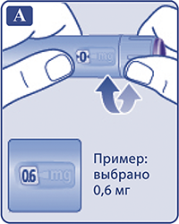 Сколько препарата осталось?
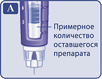
Если Вам необходимо ввести большее количество препарата, чем осталось в шприц-ручке Только если Вас обучили врач или медсестра, Вы можете разделить дозу препарата между двумя шприц-ручками (той, которая сейчас находится в использовании, и новой). Используйте калькулятор, чтобы спланировать дозы, как рекомендовано врачом или медсестрой. (!) Будьте очень внимательны, чтобы правильно рассчитать дозу. Если Вы не уверены в том, как правильно разделить дозу, используя две шприц-ручки, установите и введите полную дозу с помощью новой шприц-ручки. 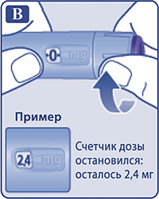 4. Введение препарата
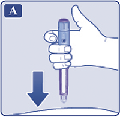
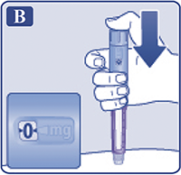
Если Вы извлечете иглу из-под кожи раньше, Вы можете увидеть, как препарат вытекает из иглы. В этом случае будет введена неполная доза препарата. 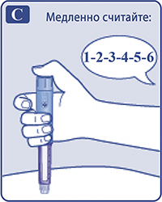
После завершения инъекции Вы можете увидеть каплю раствора на конце иглы. Это нормально и не влияет на дозу препарата, которую Вы ввели. (!) Всегда сверяйтесь с показаниями счетчика дозы, чтобы знать, какое количество мг препарата Вы ввели. Удерживайте пусковую кнопку до тех пор, пока счетчик дозы не покажет "0". 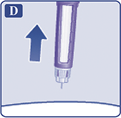 Как выявить закупорку или повреждение иглы?
Что делать с закупоренной иглой? Снимите иглу как описано в операции 5 "После завершения инъекции" и повторите все шаги, начиная с операции 1 "Подготовка шприц-ручки с иглой к использованию". Убедитесь, что установили необходимую Вам дозу. Никогда не прикасайтесь к счетчику дозы во время введения препарата. Это может прервать инъекцию. 5. После завершения инъекции
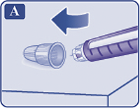
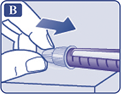
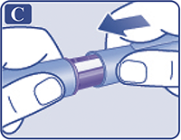 Всегда после каждой инъекции выбрасывайте иглу, чтобы обеспечить комфортную инъекцию и избежать закупорки игл. Если игла закупорена, Вы не введете себе препарат. Выбрасывайте пустую шприц-ручку с отсоединенной иглой, в соответствии с рекомендациями, данными Вашим врачом, медсестрой, фармацевтом или в соответствии с местными требованиями. (!) Никогда не пытайтесь надеть внутренний колпачок обратно на иглу. Вы можете уколоться. (!) Всегда удаляйте иглу со шприц-ручки после каждой инъекции. Это может предотвратить закупорку игл, загрязнение, инфицирование, вытекание раствора и введение неправильной дозы препарата. (!) Дополнительная важная информация
Уход за шприц-ручкой
Побочное действие
Безопасность препарата Саксенда® была оценена в 5 двойных слепых плацебо-контролируемых исследованиях, в которых приняли участие 5813 пациентов с ожирением или с избыточной массой тела и, как минимум, с одним связанным с избыточной массой тела сопутствующим заболеванием. В целом, нарушения со стороны ЖКТ являлись наиболее часто отмечаемыми побочными эффектами во время терапии препаратом Саксенда® (см. "Описание отдельных нежелательных реакций"). В таблице 3 представлен перечень нежелательных реакций, зарегистрированных в ходе долгосрочных контролируемых исследований 2 и 3 фазы. Нежелательные реакции распределены по группам в соответствии с системами органов MedDRA и частотой. Определение частоты нежелательных реакций: очень часто (≥1/10); часто (≥1/100 до <1/10); нечасто (≥1/1000 до <1/100); редко (>1/10000 до <1/1000); очень редко (<1/10000). Таблица 3. Нежелательные реакции, зарегистрированные в ходе контролируемых исследований 2 и 3 фазы
* Гипогликемия (на основании отмеченных пациентами симптомов и не подтвержденная измерениями концентрации глюкозы крови), отмеченная у пациентов без СД2, получавших препарат Саксенда® в сочетании с диетой и физическими нагрузками. Подробную информацию см. в "Описание отдельных нежелательных реакций". ** Преимущественно отмечали во время первых 3 месяцев терапии. *** См. раздел "Особые указания". **** В соответствии с фазами 2, 3a и 3b контролируемого клинического исследования. Описание отдельных нежелательных реакций Гипогликемия у пациентов без сахарного диабета 2 типа В клинических исследованиях с участием пациентов с избыточной массой тела или ожирением без СД2, получавших терапию препаратом Саксенда® в сочетании с диетой и физическими нагрузками, тяжелых гипогликемий (требующих оказания помощи третьим лицом) отмечено не было. О симптомах гипогликемии сообщали 1.6% пациентов, получавших препарат Саксенда®, и 1.1% пациентов, получавших плацебо; однако эти случаи не были подтверждены измерениями концентрации глюкозы крови. В большинстве случаев отмечалась легкая гипогликемия. Гипогликемия у пациентов с сахарным диабетом 2 типа В клинических исследованиях с участием пациентов с избыточной массой тела или ожирением и СД2, получавших терапию препаратом Саксенда® в сочетании с диетой и физическими нагрузками, случаи тяжелой гипогликемии (требующие оказания помощи третьим лицом) были отмечены у 0.7% пациентов, получавших препарат Саксенда®, и только у пациентов, одновременно получавших терапию производными сульфонилмочевины. Также в этой группе пациентов подтвержденная гипогликемия (концентрация глюкозы ≤3.9 ммоль/л в сочетании с симптомами) была отмечена у 43.6% пациентов, получавших препарат Саксенда®, и 27.3% пациентов, получавших плацебо. Среди пациентов, не получавших одновременно препарат сульфонилмочевины, подтвержденная гипогликемия была отмечена у 15.7% пациентов, получавших препарат Саксенда®, и у 7.6% пациентов, получавших плацебо. Гипогликемия у пациентов с сахарным диабетом 2 типа, получающих инсулин В клинических исследованиях с участием пациентов с избыточной массой тела или ожирением с СД2 типа, получавших терапию инсулином и препаратом Саксенда® в сочетании с диетой и физическими нагрузками и до двух пероральных гипогликемических препаратов, тяжелая гипогликемия (требующая оказания помощи третьим лицом) была отмечена у 1.5% пациентов, получавших терапию препаратом Саксенда®. В данном исследовании подтвержденная гипогликемия (определяемая как уровень глюкозы в плазме ≤3.9 ммоль/л, сопровождаемая симптомами) была зарегистрирована у 47.2% пациентов, получавших терапию препаратом Саксенда®, и у 51.8% пациентов, получавших плацебо. Сообщалось о подтвержденных гипогликемических эпизодах среди пациентов, одновременно получавших производные сульфонилмочевины, у 60.9% пациентов, получавших терапию препаратом Саксенда®, и у 60.0% пациентов, получавших плацебо. Нежелательные реакции со стороны ЖКТ Большинство реакций со стороны ЖКТ были легкой или средней степени тяжести, преходящими и, в большинстве случаев, не приводили к прекращению терапии. Реакции обычно возникали в первые недели терапии, и их проявления постепенно уменьшались в течение нескольких дней или недель при продолжении терапии. У пациентов в возрасте ≥65 лет могут наблюдаться более выраженные проявления нежелательных реакций со стороны ЖКТ во время терапии препаратом Саксенда®. У пациентов с почечной недостаточностью легкой или средней степени тяжести (КК ≥30 мл/мин) могут наблюдаться более выраженные проявления нежелательных реакций со стороны ЖКТ во время терапии препаратом Саксенда®. Аллергические реакции В пострегистрационном периоде сообщалось о возникновении нескольких случаев анафилактических реакций с такими симптомами, как артериальная гипотензия, ощущение сердцебиения, одышка или периферические отеки. Анафилактические реакции потенциально могут быть угрожающими жизни. Реакции в месте введения Сообщалось о реакциях в месте введения у пациентов, получавших препарат Саксенда®. Эти реакции, как правило, были легкой степени, носили транзиторный характер и в большинстве случаев исчезали при продолжении терапии. Тахикардия В клинических исследованиях тахикардия была отмечена у 0.6% пациентов, получавших препарат Саксенда®, и у 0.1% пациентов, получавших плацебо. Большинство явлений были легкой или средней степени тяжести. Явления были единичными и в большинстве случаев проходили при продолжении терапии препаратом Саксенда®. Дети и подростки В клиническом исследовании, проведенном с участием подростков с ожирением в возрасте от 12 до 18 лет, 125 пациентов получали терапию препаратом Саксенда® в течение 56 недель. В целом, частота развития, тип и степень тяжести нежелательных реакций у подростков с ожирением были сопоставимы с таковыми у взрослых пациентов. Рвота у подростков возникала в два раза чаще по сравнению со взрослыми пациентами. Никакого влияния на рост или пубертатное развитие обнаружено не было. Противопоказания
Противопоказано применение у следующих групп пациентов и при следующих состояниях/заболеваниях в связи с отсутствием данных по эффективности и безопасности:
У пациентов с сахарным диабетом препарат Саксенда® не должен применяться в качестве заменителя инсулина. Опыт применения препарата Саксенда® у пациентов с воспалительными заболеваниями кишечника и диабетическим парезом желудка ограничен. Применение лираглутида у таких пациентов не рекомендуется, поскольку оно связано с транзиторными нежелательными реакциями со стороны ЖКТ, включая тошноту, рвоту и диарею. С осторожностью Препарат Саксенда® рекомендуется применять с осторожностью у пациентов с печеночной недостаточностью легкой и средней степени тяжести, заболеваниями щитовидной железы и наличием острого панкреатита в анамнезе. Применение при беременности и кормлении грудью
Беременность Данные по применению препарата Саксенда® у беременных женщин ограничены. В исследованиях на животных была продемонстрирована репродуктивная токсичность. Потенциальный риск для человека неизвестен. Применение препарата Саксенда® в период беременности противопоказано. При планировании или наступлении беременности терапию препаратом Саксенда® необходимо прекратить. Период грудного вскармливания Неизвестно, проникает ли лираглутид в грудное молоко человека. В исследованиях на животных было продемонстрировано, что проникновение лираглутида и структурно близких метаболитов в грудное молоко является низким. В доклинических исследованиях было продемонстрировано связанное с терапией замедление роста новорожденных крысят, находящихся на грудном вскармливании. В связи с отсутствием опыта применения, препарат Саксенда® противопоказан во время грудного вскармливания. Фертильность За исключением незначительного уменьшения числа живых зародышей, результаты исследований на животных не указывают на наличие неблагоприятного влияния на фертильность. Особые указания
У пациентов с СД нельзя применять препарат Саксенда® в качестве замены инсулина. Диабетический кетоацидоз отмечался у пациентов, получавших терапию инсулином, после быстрого прекращения или снижения дозы инсулина (см. раздел "Режим дозирования"). Панкреатит Применение агонистов рецепторов ГПП-1 ассоциировалось с развитием острого панкреатита. Пациенты должны быть проинформированы о характерных симптомах острого панкреатита. В случае подозрения на развитие панкреатита применение препарата Саксенда® следует прекратить; в случае подтверждения острого панкреатита терапию препаратом Саксенда® возобновлять не следует. Холелитиаз и холецистит В клинических исследованиях была отмечена более высокая частота развития холелитиаза и холецистита у пациентов, получавших препарат Саксенда®, по сравнению с получавшими плацебо пациентами. Это может быть частично объяснено тем, что значительное снижение массы тела при применении препарата Саксенда® может увеличить риск развития холелитиаза и, следовательно, холецистита. Холелитиаз и холецистит могут привести к госпитализации и холецистэктомии. Пациенты должны быть проинформированы о характерных симптомах холелитиаза и холецистита. Заболевания щитовидной железы В ходе клинических исследований с участием пациентов с СД2 были отмечены нежелательные реакции со стороны щитовидной железы, включая увеличение концентрации кальцитонина в сыворотке крови, зоб и новообразование щитовидной железы, в особенности у пациентов, уже имеющих заболевания щитовидной железы. У пациентов с заболеваниями щитовидной железы препарат Саксенда® следует применять с осторожностью. В постмаркетинговом периоде у пациентов, получавших лираглутид, были отмечены случаи медуллярного рака щитовидной железы. Имеющихся данных недостаточно для установления или исключения причинно-следственной связи возникновения медуллярного рака щитовидной железы с применением лираглутида у человека. Препарат Саксенда® противопоказан к применению у пациентов с медуллярным раком щитовидной железы в анамнезе, в т.ч. в семейном, и множественной эндокринной неоплазией 2 типа. Необходимо проинформировать пациента о риске медуллярного рака щитовидной железы и о симптомах опухоли щитовидной железы (уплотнения в области шеи, дисфагия, одышка, непроходящая охриплость голоса). Текущий контроль концентрации кальцитонина в сыворотке крови или УЗИ щитовидной железы не имеют существенного значения для раннего выявления медуллярного рака щитовидной железы у пациентов, применяющих препарат Саксенда®. Значительное повышение концентрации кальцитонина в сыворотке крови может свидетельствовать о наличии медуллярного рака щитовидной железы, пациенты с медуллярным раком щитовидной железы обычно имеют концентрацию кальцитонина более 50 нг/л. При выявлении повышения концентрации кальцитонина в сыворотке крови необходимо провести дальнейшее обследование пациента. Пациенты с узлами щитовидной железы, выявленными при медосмотре или при УЗИ щитовидной железы, также должны быть дополнительно обследованы. Частота сердечных сокращений В клинических исследованиях было отмечено увеличение ЧСС (см. раздел "Фармакологическое действие" - Клиническая эффективность и безопасность). Следует проводить контроль ЧСС с интервалами, соответствующими обычной клинической практике. Пациентов следует проинформировать о симптомах тахикардии (ощущение сердцебиения или ощущение учащенного сердцебиения в покое). У пациентов с клинически значимой постоянной тахикардией в состоянии покоя следует прекратить терапию препаратом Саксенда®. Обезвоживание Признаки и симптомы обезвоживания, включая нарушение функции почек и острую почечную недостаточность, были отмечены у пациентов, получавших агонисты рецепторов ГПП-1. Пациенты, получающие препарат Саксенда®, должны быть проинформированы о потенциальном риске обезвоживания, связанного с побочными эффектами со стороны ЖКТ, и о необходимости профилактики гиповолемии. Гипогликемия у пациентов с избыточной массой тела или ожирением и сахарным диабетом 2 типа Риск развития гипогликемии может быть выше у пациентов с СД2, получающих препарат Саксенда® в комбинации с производными сульфонилмочевины. Этот риск может быть уменьшен путем снижения дозы производного сульфонилмочевины. Добавление препарата Саксенда® к терапии у пациентов, получающих инсулин, не оценивали. Суицидальные мысли и поведение В ходе клинических исследований 6 (0.2%) из 3384 пациентов, получавших препарат Саксенда®, сообщили о появлении суицидальных мыслей, один из пациентов предпринял попытку суицида. У пациентов (1941 человек), получавших плацебо, это отмечено не было. Пациентов необходимо контролировать в отношении появления или ухудшения депрессии, суицидальных мыслей или поведения, и/или любых неожиданных изменений в настроении или поведении. У пациентов с суицидальными мыслями или поведением применение препарата Саксенда® следует прекратить. Противопоказано применять препарат Саксенда® у пациентов с суицидальными попытками или активными суицидальными мыслями в анамнезе. Рак молочной железы (РМЖ) В ходе клинических исследований сообщалось о подтвержденном РМЖ у 14 (0.6%) из 2379 женщин, получавших препарат Саксенда®, по сравнению с 3 (0.2%) из 1300 женщин, получавших плацебо, включая инвазивный рак (11 случаев у женщин, получавших препарат Саксенда®, и 3 случая у женщин, получавших плацебо) и внутрипротоковая карцинома in situ (3 случая у женщин, получавших препарат Саксенда®, и 1 случай у женщины, получавшей плацебо). Большинство случаев рака были эстроген- и прогестерон-зависимыми. Невозможно определить, были ли эти случаи связаны с применением препарата Саксенда® из-за их слишком небольшого количества. Кроме того, нет достаточных данных, чтобы определить, оказывает ли препарат Саксенда® влияние на уже существующие новообразования молочной железы. Папиллярный рак щитовидной железы В ходе клинических исследований сообщалось о подтвержденной папиллярной карциноме щитовидной железы у 7 (0.2%) из 3291 пациентов, получавших препарат Саксенда®, по сравнению с отсутствием ее в группе пациентов, получавших плацебо (1843 пациента). Из всех случаев 4 карциномы были менее 1 см в наибольшем диаметре и 4 были диагностированы по результатам гистологии после проведенной по медицинским показаниям тиреоидэктомии. Неоплазии ободочной и прямой кишки В ходе клинических исследований сообщалось о подтвержденных доброкачественных неоплазиях ободочной и прямой кишки (преимущественно аденомах ободочной кишки) у 17 (0.5%) из 3291 пациентов, получавших препарат Саксенда®, по сравнению с 4 (0.2%) из 1843 пациентов, получавших плацебо. Было зарегистрировано два подтвержденных случая злокачественной карциномы ободочной и прямой кишки (0.1%) у пациентов, получавших препарат Саксенда®, и ни одного у пациентов, получавших плацебо. Нарушения сердечной проводимости В ходе клинических исследований у 11 (0.3%) из 3384 пациентов, получавших препарат Саксенда®, сообщалось о развитии нарушений сердечной проводимости, таких как AV-блокада I степени, блокада правой ножки пучка Гиса или блокада левой ножки пучка Гиса. У пациентов (1941 человек), получавших плацебо, о развитии нарушений сердечной проводимости не сообщалось. Доклинические данные по безопасности Доклинические данные, основанные на исследованиях фармакологической безопасности, токсичности повторных доз и генотоксичности, не выявили какой-либо опасности для человека. В двухлетних исследованиях канцерогенности у крыс и мышей были выявлены опухоли С-клеток щитовидной железы, не приводившие к летальному исходу. Результаты, полученные в ходе исследований на грызунах, обусловлены тем, что грызуны проявляют особую чувствительность в отношении опосредуемого рецептором ГПП-1 не генотоксичного специфического механизма. Появления других новообразований, связанных с проводимой терапией, отмечено не было. В исследованиях на животных не выявлено прямого неблагоприятного эффекта препарата на фертильность, но было отмечено незначительное увеличение частоты ранней эмбриональной смерти при применении самых высоких доз препарата. Влияние на способность к управлению транспортными средствами и механизмами Препарат Саксенда® не влияет или незначительно влияет на способность к управлению транспортными средствами и механизмами. В связи с риском развития гипогликемии при применении препарата, особенно при комбинированном применении с препаратами сульфонилмочевины у пациентов с СД2, следует соблюдать осторожность при управлении транспортными средствами и механизмами. Передозировка
Симптомы: по данным клинических исследований и пострегистрационного применения лираглутида были зарегистрированы случаи передозировки при применении препарата в дозе от 72 мг (в 24 раза больше рекомендуемой для коррекции массы тела). Пациенты отмечали сильную тошноту, сильную рвоту и тяжелую гипогликемию. Лечение: в случае передозировки необходимо начать поддерживающую терапию в соответствии с клиническими признаками и симптомами. Пациента следует наблюдать на предмет клинических признаков обезвоживания и контролировать концентрацию глюкозы в крови. Лекарственное взаимодействие
Оценка взаимодействия лекарственных средств in vitro Лираглутид показал очень низкую способность к лекарственному фармакокинетическому взаимодействию, обусловленному метаболизмом в системе цитохрома Р450 (CYP), а также связыванием с белками плазмы. Оценка взаимодействия лекарственных средств in vivo Небольшая задержка опорожнения желудка при применении лираглутида может влиять на всасывание одновременно применяемых препаратов для приема внутрь. Исследования лекарственного взаимодействия не показали какого-либо клинически значимого замедления всасывания этих препаратов, поэтому коррекции дозы не требуется. Исследования взаимодействия проводили с применением лираглутида в дозе 1.8 мг. Влияние на скорость опорожнения желудка было одинаковым при применении лираглутида в дозе 1.8 мг и 3.0 мг (AUC0-300 мин парацетамола). У нескольких пациентов, получавших лечение лираглутидом, отмечалось как минимум по одному эпизоду тяжелой диареи. Диарея может оказывать влияние на всасывание пероральных лекарственных препаратов, которые применяются одновременно с лираглутидом. Варфарин и другие производные кумарина Исследования по взаимодействию не проводились. Не может быть исключено клинически значимое взаимодействие с действующими веществами с низкой растворимостью или узким терапевтическим индексом, такими как варфарин. В начале лечения препаратом Саксенда® у пациентов, получающих варфарин или другие производные кумарина, рекомендуется чаще проводить мониторинг МНО. Парацетамол (ацетаминофен) Лираглутид не изменял общую экспозицию парацетамола после введения однократной дозы парацетамола 1000 мг. Cmax парацетамола была снижена на 31%, а медиана Tmax увеличена на 15 мин. Коррекция дозы при сопутствующем применении парацетамола не требуется. Аторвастатин Лираглутид не изменял общую экспозицию аторвастатина после применения однократной дозы аторвастатина 40 мг. Поэтому коррекция дозы аторвастатина при применении в сочетании с лираглутидом не требуется. Cmax аторвастатина была снижена на 38%, а медиана Tmax увеличена с 1 ч до 3 ч при применении лираглутида. Гризеофульвин Лираглутид не изменял общую экспозицию гризеофульвина после применения однократной дозы гризеофульвина 500 мг. Сmax гризеофульвина была увеличена на 37%, а медиана Tmax не изменилась. Коррекция дозы гризеофульвина и других соединений с низкой растворимостью и высокой проникающей способностью не требуется. Дигоксин Применение однократной дозы дигоксина 1 мг в сочетании с лираглутидом привело к уменьшению AUC дигоксина на 16%, уменьшению Сmax на 31%. Медиана Tmax дигоксина увеличилась с 1 ч до 1.5 ч. С учетом данных результатов, коррекции дозы дигоксина не требуется. Лизиноприл Применение однократной дозы лизиноприла 20 мг в сочетании с лираглутидом привело к уменьшению AUC лизиноприла на 15%, уменьшению Сmax на 27%. При применении лираглутида медиана Tmax лизиноприла увеличилась с 6 ч до 8 ч. С учетом данных результатов, коррекции дозы лизиноприла не требуется. Пероральные контрацептивы Лираглутид приводил к уменьшению Сmax этинилэстрадиола и левоноргестрела на 12% и 13%, соответственно, после применения однократной дозы перорального гормонального контрацептивного препарата. Tmax обоих лекарственных веществ на фоне применения лираглутида увеличивалась на 1.5 ч. Не было отмечено клинически значимого влияния на системную экспозицию этинилэстрадиола или левоноргестрела. Таким образом, не ожидается влияния на контрацептивный эффект при совместном применении с лираглутидом. Несовместимость Лекарственные вещества, добавленные к препарату Саксенда®, могут вызвать разрушение лираглутида. В связи с отсутствием исследований совместимости данный лекарственный препарат нельзя смешивать с другими лекарственными препаратами. Условия хранения и сроки годности
Препарат следует хранить в недоступном для детей месте при температуре от 2° до 8°С (в холодильнике), но не рядом с морозильной камерой. Не замораживать. Используемую шприц-ручку с препаратом хранить при температуре не выше 30°С или в холодильнике (при температуре от 2°С до 8°С). Не замораживать. Использовать в течение 1 месяца. Закрывать шприц-ручку колпачком для защиты от света. Срок годности - 30 месяцев. Не применять по истечении срока, указанного на этикетке шприц-ручки и упаковке. |
|||||||||||||||||||||||||||||||||||||||||||||||||||||||||||||||||||||||||||||||||||||||||||||||||||||||||||||||||||||
Вернуться наверх |
|||||||||||||||||||||||||||||||||||||||||||||||||||||||||||||||||||||||||||||||||||||||||||||||||||||||||||||||||||||
Copyright © Справочник Видаль «Лекарственные препараты в России», Москва, Россия